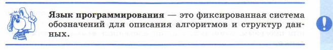
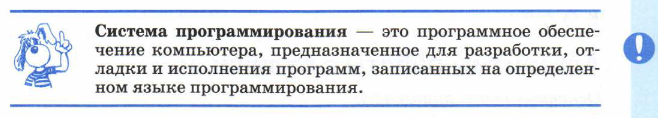

Основные темы параграфа:
кто такие программисты;
что такое язык программирования;
что такое система программирования;
вопросы и задания;
тест;
Кто такие программисты
Теперь вам предстоит ближе познакомиться еще с одним разделом информатики, который называется «Программирование».
Назначение программирования - разработка программ управления компьютером с целью решения различных информационных задач.
Специалисты, профессионально занимающиеся программированием, называются программистами. В первые годы существования ЭВМ для использования компьютера в любой области нужно было уметь программировать. В 1970-1980-х годах начинает развиваться прикладное программное обеспечение. Бурное распространение прикладного ПО произошло с появлением персональных компьютеров. Стало совсем не обязательным уметь программировать для того, чтобы воспользоваться компьютером. Люди, работающие на компьютерах, разделились на пользователей и программистов. В настоящее время пользователей гораздо больше, чем программистов.
Может возникнуть впечатление, что программисты теперь уже и ненужны! Но кто же тогда будет создавать все операционные системы, редакторы, графические пакеты, компьютерные игры и многое другое? Программисты, безусловно, нужны, причем задачи, которые им приходится решать, со временем становятся все сложнее.
Программирование принято разделять на системное и прикладное. Системные программисты занимаются разработкой системного программного обеспечения: операционных систем, утилит и пр., а также систем программирования. Прикладные программисты создают прикладные программы: редакторы, табличные процессоры, игры, обучающие программы и др. Спрос на высококвалифицированных программистов, как системных, так и прикладных, очень большой.
В данной главе вы познакомитесь с простейшими правилами и приемами программирования, заглянете в эту актуальную и престижную профессиональную область.
Что такое язык программирования
Для составления программ существуют разнообразные языки программирования.

За годы существования ЭВМ было создано много языков программирования. Наиболее известные среди них: Фортран, Паскаль, Бейсик, С (Си) и др. Распространенными языками программирования сегодня являются С++, Java, Pascal, Basic, Python.
Что такое система программирования
Для создания и исполнения на компьютере программы, написанной на языке программирования, используются системы программирования.

Существуют системы программирования на Паскале, Бейсике и других языках. Коротко о главном
Программирование — область информатики, посвященная разработке программ управления компьютером с целью решения различных информационных задач.
Программирование бывает системным и прикладным.
Паскаль, Бейсик, Си, Фортран — это универсальные языкипрограммирования.
В данной главе речь будет идти о средствах и способах универсального программирования — не ориентированного на какую-то узкую прикладную область. Примером узкоспециализированного программирования является Web-программирование, ориентированное на создание Web-сайтов. Для этих целей, например, используется язык JavaScript. Языки Паскаль, Бейсик, Си относятся к числу универсальных языков программирования.
Разработка любой программы начинается с построения алгоритма решения задачи. Ниже мы обсудим особенности алгоритмов решения задач обработки информации на компьютере.
Система программирования — это программное обеспечение компьютера, предназначенное для разработки, отладки и исполнения программ, записанных на определенном языке программирования.
1. Что такое программирование?
2. Какие задачи решают системные и прикладные программисты?
3. Назовите наиболее распространенные языки программирования.
4. В чем состоит назначение систем программирования?
Тест